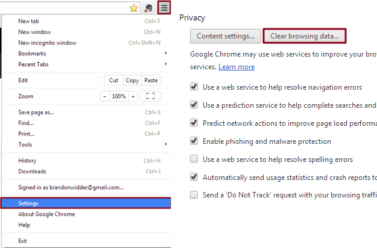
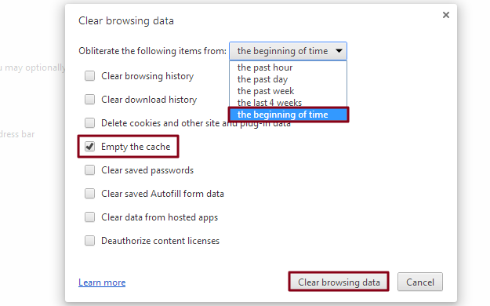

Step 1: Open the settings — Launch Google Chrome, click the Chrome menu icon represented by three horizontal bars in the upper-right corner of the browser window, and click Settings near the bottom of the resulting drop-down menu. Afterward, click the blue Show advanced settings option at the bottom of the page, followed by the gray Clear browsing data button located beneath the Privacy section.

Step 2: Clear the browser cache — Check the box directly left of the Empty the cache option near the middle of the new pop-up window, along with any other browser data you wish to clear, and select the beginning of time option from the drop-down menu indicating how far back you wish to clear your cache. Afterward, click the gray Clear browsing data button in the bottom-right corner of the window and allow the cache to clear.
